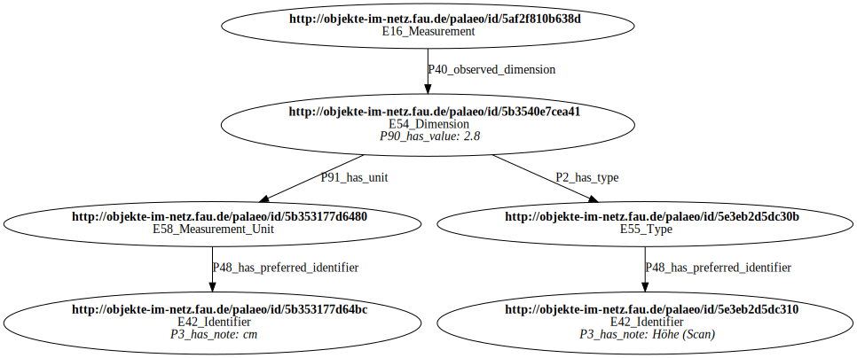

Datenbankschema
Im Folgenden das Datenbankschema des Property Graphen beschrieben. Die RDF-Daten im Triple-Store folgend dagegen bislang keinen Schema sondern werden so eingespielt wie sie geliefert werden.
Als Sammlungsübergeifendes Datenmodell wird CIDOC-CRM (CRM) verwendet. Weitere Ontologien müssen auf CRM gemappt werden. Darüber hinaus werden eine Reihen von etablierten Vokabularen wie ICONCLASS, GND und die LIDO-Terminologien unterstützt.
Modellierung
Die Modellierung ist noch nicht abgeschlossen! Überlegungen zur Abbildung von CRM in RDF befinden sich hier.
Entitäten und Knoten
Knoten im Property Graphen erhalten als Knoten-Label die entsprechenden CRM-Klassen. Dabei werden Leerzeichen und Sonderzeichen durch Unterstrich ersetzt
Entitäten der CRM-Klasse E16 Measurement werden Knoten mit dem Label E16_Measurement. Entitäten der CRM-Klasse E22 Human-Made Object werden Knoten mit dem Label E22_Human_Made_Object
Zwischenzeitlich gelöschte und umbenannte Klassen können weiterhin verwendet werden, allerdings werden diese durch Expansion auf die neueste Form gemappt.
Elementare Datentypen
Die folgende CRM-Klassen für elementare Datentypen werden nicht als Knoten-Label verwendet. Ihre Instanzen werden im Datenmodell stattdessen als Property-Werte abgebildet:
- E59 Primitive Value
- E60 Number für Zahlen
- E62 String für Zeichenketten
Instanzen der folgenden CRM-Klassen werden ebenfalls wenn möglich nicht als Knoten sondern als Property-Werte abgebildet. Anderenfalls erfolgt die Expansion nur über die übergeordnete Klasse E41 Appellation:
- E61 Time Primitive für Datums- und Zeitangaben
- E94 Space Primitive für Koordinaten
Relationen und Kanten
CRM-Properties (nicht zu verwechseln mit Eigenschaften im Property-Graph Datenbankmodell) werden im Property-Graphen durch Kanten-Label modelliert.
Expansion von Kanten-Label ist noch nicht umgesetzt!
Inverse CRM-Properties sind noch nicht berücksichtigt!
Eine Ausnahme bilden die folgenden CRM-Properties für elementare Datentypen, die stattdessen zu Property-Keys werden (siehe folgender Abschnitt).
Properties
Folgende CRM-Properties werden im Property-Graphen durch Knoten-Properties modelliert:
| CRM-Property | Property-Key | Datentyp |
|---|---|---|
| P3 has note | P3_has_note |
Zeichenkette |
| P57 has number of parts | P57_has_number_of_parts |
Zahl |
| P79 beginning is qualified by | P79_beginning_is_qualified_by |
Zeichenkette |
| P80 end is qualified by | P80_end_is_qualified_by |
Zeichenkette |
| P90 has value | P90_has_value |
Zahl) |
| P168 place is defined by (defines place) | P168_place_is_defined_by |
Koordinate |
| P170 defines time (time is defined by) | P170i_time_is_defined_by (inverse Relation!) |
Datums-/Zeitangabe |
| P171 at some place within | P171_at_some_place_within |
Koordinate |
| P172 contains | P172_contains |
Koordinate |
| P190 has_symbolic_content | P190_has_symbolic_content |
Zeichenkette |
Die Property-Keys werden möglicherweise noch umbenannt, um zu lange Namen zu vermeiden!
d1 :E54_Dimension P90_has_value:12 # Wert 12 als Property
d1 -> u1 :P90_has_unit # Einheit u1 (hier nicht weiter definiert) Darüber hinaus gibt es einige besondere Property-Keys, deren möglicher Einsatz noch diskutiert wird:
cIDcollectionvaluelangtypeprefformatResourcesortordersourceuri
Expansion
Entsprechend der CRM-Klassenhierarchie erhalten alle Knoten ausgehend von ihren Labels jeweils zusätzlich als Label die CRM-Kürzel der eigenen und aller übergeordneten Klassen.
Knoten mit dem Label E16_Measurement erhalten zusätzlich die Label E16 sowie die übergeordneten Klassen E13 (Attribute Assignment), E7 (Activity), E5 (Event), E4 (Period), E2 (Temporal Entity) und E92 (Spacetime Volume) sowie E1 (CRM Entity).
Entitäten der CRM-Klasse E22 Man-Made_Object (mit CRM-Version 6.2.7 umbenannt in “E22 Human-Made Object”) werden Knoten mit dem Label E22_Man_Made_Object und erhalten die selben Überklassen wie E22_Human_Made_Object.
Entitäte der CRM-Klasse E40 Legal-Body werden Knoten mit dem Label E40_Legal_Body aber da die Klasse veraltet ist und stattdessen E74 Group verwendet werden soll, erhalten sie zusätzlich die Label E74 und die selben Überklassen wie E74_Group.
Die Anreicherung ergibt sich aus der CRM-Klassenhierarchie:
{kind=link}
{kind=link}
{kind=link}
Offene Punkte
Das Datenmodell muss noch erweitert werden um:
- Identifier (für Normdaten-Identifier siehe https://github.com/nfdi4objects/n4o-terminologies)
CREATE CONSTRAINT uri FOR (n:E1) REQUIRE n.uri IS UNIQUE
- Informationen über Sammlungen aus denen die Daten und Objekte stammen (siehe https://github.com/nfdi4objects/n4o-databases und https://github.com/nfdi4objects/n4o-rdf-import)
- Informationen über Ontologien und Vokabulare
Beispiel
Folgender in CIDOC-CRM modellierter Teilgraph (in Turtle-Syntax):
@prefix crm: <http://www.cidoc-crm.org/cidoc-crm/> .
<http://objekte-im-netz.fau.de/palaeo/id/5af2f810b638d>
a crm:E16_Measurement ;
crm:P40_observed_dimension <http://objekte-im-netz.fau.de/palaeo/id/5b3540e7cea41> .
<http://objekte-im-netz.fau.de/palaeo/id/5b3540e7cea41>
a crm:E54_Dimension ;
crm:P2_has_type <http://objekte-im-netz.fau.de/palaeo/id/5e3eb2d5dc30b> ;
crm:P91_has_unit <http://objekte-im-netz.fau.de/palaeo/id/5b353177d6480>
crm:P90_has_value 2.8 .
<http://objekte-im-netz.fau.de/palaeo/id/5b353177d6480>
a crm:E58_Measurement_Unit ;
crm:P48_has_preferred_identifier <http://objekte-im-netz.fau.de/palaeo/id/5b353177d64bc> .
<http://objekte-im-netz.fau.de/palaeo/id/5e3eb2d5dc30b>
a crm:E55_Type .
crm:P48_has_preferred_identifier <http://objekte-im-netz.fau.de/palaeo/id/5e3eb2d5dc310> ;
<http://objekte-im-netz.fau.de/palaeo/id/5e3eb2d5dc310>
a crm:E42_Identifier ;
crm:P3_has_note "Höhe (Scan)" .
<http://objekte-im-netz.fau.de/palaeo/id/5b353177d64bc>
a crm:E42_Identifier ;
crm:P3_has_note "cm" .
wird konvertiert in folgenden Property Graph (in PG Format und als Diagram):
http://objekte-im-netz.fau.de/palaeo/id/5af2f810b638d
:E16_Measurement
http://objekte-im-netz.fau.de/palaeo/id/5af2f810b638d
-> http://objekte-im-netz.fau.de/palaeo/id/5b3540e7cea41
:P40_observed_dimension
http://objekte-im-netz.fau.de/palaeo/id/5b3540e7cea41
:E54_Dimension
P90_has_value: 2.8
http://objekte-im-netz.fau.de/palaeo/id/5b3540e7cea41
-> http://objekte-im-netz.fau.de/palaeo/id/5e3eb2d5dc30b
:P2_has_type
http://objekte-im-netz.fau.de/palaeo/id/5b3540e7cea41
-> http://objekte-im-netz.fau.de/palaeo/id/5b353177d6480
:P91_has_unit
http://objekte-im-netz.fau.de/palaeo/id/5b353177d6480
:E58_Measurement_Unit
http://objekte-im-netz.fau.de/palaeo/id/5b353177d6480
-> http://objekte-im-netz.fau.de/palaeo/id/5b353177d64bc
:P48_has_preferred_identifier
http://objekte-im-netz.fau.de/palaeo/id/5e3eb2d5dc30b
:E55_Type
http://objekte-im-netz.fau.de/palaeo/id/5e3eb2d5dc30b
-> http://objekte-im-netz.fau.de/palaeo/id/5e3eb2d5dc310
:P48_has_preferred_identifier
http://objekte-im-netz.fau.de/palaeo/id/5e3eb2d5dc310
:E42_Identifier
P3_has_note: "Höhe (Scan)"
http://objekte-im-netz.fau.de/palaeo/id/5b353177d64bc
:E42_Identifier
P3_has_note: "cm"
Vokabulare
Die konkrete Modellierung und Implementierung ist noch in Arbeit.
Ausgewählte kontrollierte Vokabulare werden zentral in den Property Graphen eingespielt. Das Datenmodell dafür basiert auf CIDOC-CRM und SKOS mit folgenden Bestandteilen:
Vokabulare haben die Property
urimit der BARTOC-URI des Vokabulars als Wert und die LabelE32_Authority_Document(E32 Authority Document) sowieConceptSchemezur Markierung, dass sie als Vokabular eingespielt wurden.Konzepte haben eine Property
uriund können unterschiedliche Label haben. Der allgemein Fall istE55_Type. (E55 Type). Darüber hinaus erhalten sie das LabelConceptzur Markierung, dass sie aus einem Vokabular statt aus einer Lieferung von Forschungsdaten stammen.Konzepte werden ihrem Vokabular mit dem Kanten-Label
inSchemezugeordnet. Die entsprechende inverse CRM-Property P71 lists wird nicht verwendet.Konzepte können mit den Kanten-Labeln
broadermiteinander verknüpft werden. Die entsprechende CRM-Property P127 has broader term wird nicht verwendet.Konzepte können eine interne ID oder Notation haben (Property
notation)Konzepte sollten Benennungen haben (Property
labelundlabelLang)
Darüber könnten folgende CRM-Bestandteile eine Rolle spielen:
- P150 defines typical part of, ein Spezialfall von
skos:related. - P2 has type
- P137 exemplifies die inverse Relation von
skos:example.
GND-Datensatz zu “Schleswig-Holstein”:
gnd :ConceptScheme :E32_Authority_Document # GND
uri: http://bartoc.org/en/node/430
sh :Concept :E55_Type :E42_Identifier # Schleswig-Holstein
uri: https://d-nb.info/gnd/4052692-6
sh -> gnd :inScheme